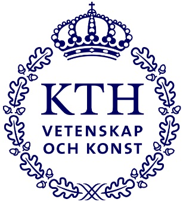
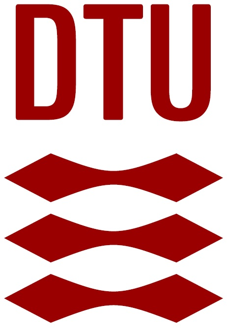
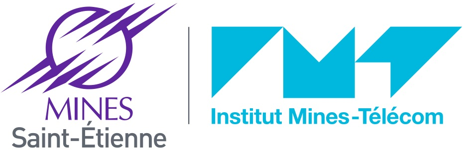

Foundations
You will build a strong foundation in digital and analog design. Core courses introduce you to the principles of chip architecture, circuit design, and essential tools used in the industry.
The Edu4Chip program is a two-year, cutting-edge Master's degree in advanced chip design, offered in partnership by the partner universities. It is designed to give you both theoretical knowledge and hands-on experience, the program's highlight is the Chip Design Tape-Out Project, where you will design, manufacture, and test your own chip. An opportunity you will not find in typical microelectronics programs.
The program offers a blend of theory and practice and covers four areas.
You will build a strong foundation in digital and analog design. Core courses introduce you to the principles of chip architecture, circuit design, and essential tools used in the industry.
You will dive deeper into front-end design topics, gaining advanced knowledge in areas like system-on-chip integration, verification techniques, and preparing for the chip design project.
Specialized courses focus on back-end design and physical design. This is when you will begin working on the practical stages of the tape-out project, bringing your chip design to life.
The final stage is dedicated to your Master’s thesis, often in collaboration with industry partners. You'll finalize your tape-out project, and after manufacturing, test and evaluate your chip.
Edu4Chip is all about flexibility. You can tailor your learning experience by choosing from a wide range of specialized courses at each partner university. Want to focus on digital design in one unversity, then dive into analog circuits in another? The program allows you to do just that. Student exchange opportunities make it easy to take advantage of each university’s strengths, ensuring you get the most out of your education.
Edu4Chip is implemented within the existing academic structures of the five partner universities. The common focus is advanced chip design and hands-on learning, while each university contributes its own areas of expertise. This gives students a clear local study path and access to complementary strengths across the consortium through mobility and shared activities.
Edu4Chip is implemented through the MSc in Microelectronics and Chip Design, with digital and analog/mixed-signal routes and a multi-stage practical chip-design sequence.
Strengths: digital and analog/mixed-signal circuits, physical design, EDA and machine learning, hardware security, clocking, power management, and chip test and evaluation.

Edu4Chip is integrated into the Embedded Systems MSc, particularly the Embedded Electronics track, with a strong focus on ASIC design and a complete tape-out experience.
Strengths: ASIC and FPGA implementation, mixed analog/digital design, analog and RF integrated circuits, tape-out, measurement, and project-based chip design.

Edu4Chip is integrated into the MSc in Computer Science and Engineering, primarily within the Digital Systems specialization, while relevant courses remain open as electives to students across the programme.
Strengths: computer architecture, digital systems, open-source chip design toolchain, VLSI and chip implementation, agile hardware design, verification, and test.
Edu4Chip is part of the Master’s Programme in Computing Sciences and Electrical Engineering through the Advanced Studies in System-on-Chip Design.
Strengths: digital SoC design, RTL and logic synthesis, high-level synthesis, SystemVerilog/UVM verification, system design, and ASIC implementation.

Edu4Chip is embedded in the ISMIN engineering curriculum and in the Advanced Master in Microelectronics Circuit Design, linking semiconductor fundamentals to circuit and system design.
Strengths: semiconductor physics and devices, process and manufacturing, cleanroom fabrication, analog and digital design, FPGA prototyping, and low-power design.
The tables below provide a concise summary of the newly developed or updated courses described in the Module Descriptions document. Credits and a short description are included to make the course offering easy to scan and compare. For complete and current course information, please follow the individual university programme pages.
TUM implements Edu4Chip through a dedicated MSc in Microelectronics and Chip Design. The course offering covers both digital and analog/mixed-signal design and includes practical work from functional design to physical implementation and post-fabrication evaluation.
| Course / module | ECTS | Short description |
|---|---|---|
| Chip Design Test and Evaluation Laboratory Course | 5 | Bring-up and characterization of fabricated chips, including test control, measurement and comparison against specifications. |
| Circuit Design for Security | 5 | Digital circuit design in a hardware-security context, including security-oriented components and implementation considerations. |
| Design of Digital Circuits | 5 | Digital IC design principles with emphasis on circuit timing, power behavior and implementation trade-offs. |
| Fundamentals of CMOS Technology for Analog Design and Standard Cell Libraries | 6 | CMOS technology, MOSFET operation, variability and standard-cell design from analog and digital perspectives. |
| HDL Chip Design Laboratory | 5 | Hands-on HDL design and integration of an electronic system with processor, bus, peripherals and hardware accelerator. |
| Lab Analog Chip Design | 5 | Cadence-based analog IC design covering transistor biasing, amplifiers, current mirrors, OTAs and verification. |
| Logic Synthesis and Physical Design | 6 | Algorithms and tools for logic synthesis, placement, routing and optimization in the digital back-end flow. |
| Machine Learning for Electronic Design Automation and Manufacturing | 5 | Machine-learning methods applied to electronic design automation and semiconductor manufacturing problems. |
| Phase Locked Loop/Clocked Circuits | 5 | Clocked circuits, oscillators, clock generation and multiplication, PLL modelling, noise and system aspects. |
| Power Management Integrated Circuits | 5 | Power-management IC architectures, regulators and converters, efficiency, control and design trade-offs. |
| Research Laboratory Functional Design of Integrated Analog and Mixed-Signal Circuits | 10 | Group project developing a transistor-level analog/mixed-signal circuit from specification toward tape-out. |
| Research Laboratory Functional Design of Integrated Digital Circuits | 10 | Group project progressing from algorithm/specification to RTL and gate-level implementation of a digital circuit. |
| Research Laboratory Physical Design of Integrated Analog and Mixed-Signal Circuits | 5 | Back-end implementation from schematic to tape-out-capable GDSII, including layout, verification and sign-off. |
| Research Laboratory Physical Design of Integrated Digital Circuits | 5 | Digital physical design from gate netlist through floorplanning, place-and-route, clocking, closure and sign-off. |
KTH’s Embedded Electronics track is organized around a full ASIC experience. Foundational digital and analog IC courses prepare students for the 15 ECTS project course, where designs progress from specification to GDSII and selected chips are fabricated.
| Course / module | ECTS | Short description |
|---|---|---|
| Introduction Integrated Circuits | 7.5 | CMOS technology, hierarchical IC design, circuit simulation, physical implementation, verification and EDA tools. |
| Embedded Hardware Design in ASIC and FPGA | 7.5 | RTL and algorithm implementation in ASIC/FPGA using automated design flows, timing-aware design and verification. |
| Analog Integrated Circuits | 7.5 | Analog IC analysis and design with emphasis on feedback amplifiers and fundamental analog building blocks. |
| Design of radio frequency integrated circuits | 7.5 | RF design concepts, transceiver architectures and integrated building blocks for wireless systems. |
| Project Course in Application Specific Integrated Circuits | 15 | Full project-based ASIC flow from specification to GDSII tape-out; selected designs are fabricated and evaluated. |
DTU integrates Edu4Chip into a flexible MSc structure rather than a mandatory fixed track. The courses below form the project-supported chip-design offering and together support a multi-semester, project-based path from architecture and RTL design to implementation, verification and test.
| Course / module | ECTS | Short description |
|---|---|---|
| Computer Architecture and Engineering | 5 | Processor organization, ISA, pipelining, memory hierarchy, HW/SW interaction and performance optimization. |
| Hardware/Software Codesign | 5 | SoC/MPSoC codesign, design-space exploration, high-level synthesis and hardware/software trade-offs. |
| Research Topics in Computer Architecture | 5 | Advanced architecture topics combined with literature study and a group research-oriented hardware or software project. |
| Design of Digital Systems | 5 | Systematic RTL design of large digital circuits, FPGA/chip implementation, and timing and area optimization. |
| Introduction to Chip Design | 5 | Digital IC design with open-source design flows and hands-on virtual and physical tape-out activities. |
| VLSI Design | 5 | MOS technology, ASIC/SoC design flows, synthesis, physical design, timing, power and low-power techniques. |
| Agile Hardware Design | 5 | Chisel-based agile hardware development with reusable generators, abstraction and test-driven design. |
| Verification of Digital Systems | 5 | Coverage-driven constrained-random verification, verification planning, testbenches and functional coverage. |
| Test of Digital Systems | 5 | Fault models, test generation and design-for-test methods for reliable testing of digital circuits. |
| Distributed Real-Time Systems1 | 5 | Real-time task models, schedulability analysis, time-sensitive networking, scheduling, and optimization of distributed real-time systems. |
1 This course was added to the Edu4Chip offering after the Module Descriptions document was finalized.
TAU implements Edu4Chip as an Advanced Studies module in System-on-Chip Design. The course offering moves from digital design and synthesis to SoC design and verification, then to system design and chip implementation. Several courses are connected through a common chip-design project.
| Course / module | ECTS | Short description |
|---|---|---|
| Digital Design | 5 | Synchronous digital logic, RTL, state machines, timing analysis and FPGA design methods. |
| Logic Synthesis | 5 | VHDL RTL synthesis, simulation, multi-clock systems, synchronization and digital implementation flow. |
| System-on-Chip Design | 5 | SoC structures, interconnects and interfaces, SystemVerilog, IP-XACT and power/performance/area considerations. |
| High-level Synthesis | 5 | High-level synthesis, scheduling, memory architecture, pipelining and hardware-oriented coding techniques. |
| System Design | 5 | Embedded MPSoC technologies, model-based system design, HW/SW reuse and application portability. |
| System-on-Chip Verification | 5 | SoC verification, SystemVerilog object orientation, UVM, integration-level verification and formal methods. |
| Chip Implementation | 5 | ASIC synthesis and physical design, standard-cell libraries, chip I/O planning and sign-off tools. |
IMT combines device- and process-level microelectronics with circuit and system design. The offering connects semiconductor fundamentals and fabrication with analog/digital design, processor architecture, synthesis, verification, FPGA prototyping and low-power techniques.
| Course / module | ECTS | Short description |
|---|---|---|
| Basics of Digital and Analog Electronics, Reminders | 2 | Core analog and digital electronics: AC/DC circuit analysis, Boolean logic, combinational and sequential design. |
| Semiconductor Physics | 2 | Semiconductor properties, energy bands, doping, carrier transport, generation and recombination. |
| Semiconductor Devices | 3 | Physical principles of microelectronic devices, including CMOS, FD-SOI and memory structures. |
| Process and Manufacturing | 2 | Cleanroom concepts and core fabrication steps including lithography, etching, implantation, deposition and oxidation. |
| Digital Design | 4 | CMOS digital circuits, timing and power, standard-cell design and Cadence-based layout, DRC and LVS. |
| Analog Design | 4 | Low-power analog IC design covering amplifiers, current mirrors, differential stages, op-amps and layout. |
| Processor Architecture | 2 | RISC-V processor architecture, pipelines, data/control dependencies and memory organization. |
| HDL Synthesis | 4 | SystemVerilog RTL modelling and synthesis methodology for the implementation of digital systems. |
| Advanced Simulation and Verification | 3 | Verification techniques including coverage, random testing and methods for checking circuit correctness during design. |
| Co-Design and FPGA Prototyping | 3 | Hardware/software partitioning and FPGA-based prototyping using a complete HW/SW design flow. |
| Low Power and Energy Harvesting | 4 | Low-power IC techniques together with system-level energy management and energy-harvesting concepts. |
| NMOS fabrication lab | 4 | One-week cleanroom laboratory covering NMOS fabrication, characterization, packaging and electrical testing. |
Each partner university (TUM, DTU, KTH, TAU, and IMT) implements the program slightly differently, adapting the structure and curriculum to fit their local context. Further details of the two-year Master's program in advanced chip design are available in the public documents below.
This document presents the overall structure of the Edu4Chip Master’s program. It describes how the program is designed across partner universities, highlighting the strengths of each institution and the opportunities for student exchange.
This document provides detailed information on the courses, teaching methods, and practical components such as lab work and chip tape-outs. It also includes mobility options and a catalogue of Lifelong Learning courses for professionals.
This document provides an overview of the newly developed or updated courses in the Edu4Chip Master’s programs, presenting detailed course descriptions that complement the previous two documents "Program concept" and "Curriculum of master programs and specializations".